Minden pillanat, amiről másnap beszélni fognak
Profi rendezvényfotós, több mint 10 év tapasztalattal. Diszkréten mozgunk a vendégek között, és mindig ott vagyunk, ahol történik valami.
Ajánlatot kérek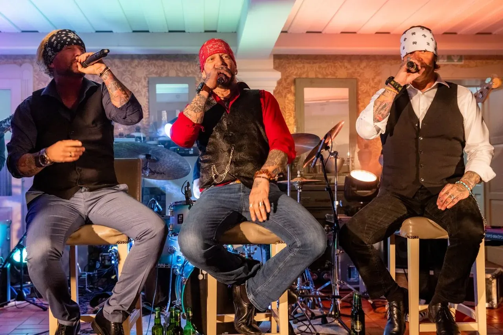
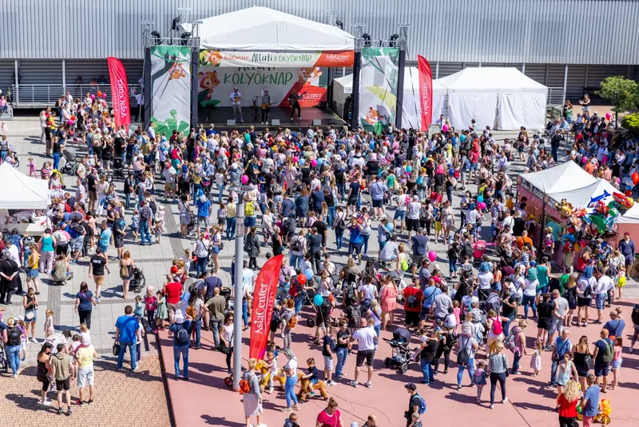
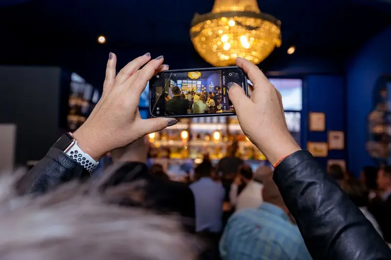
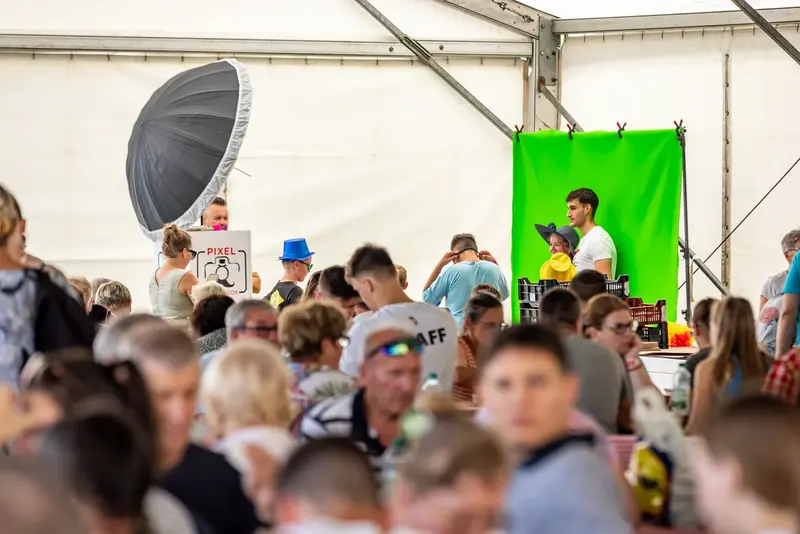
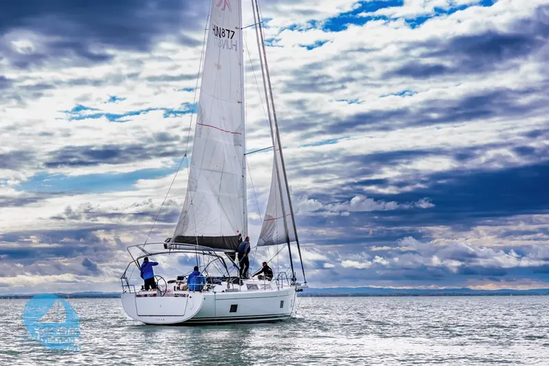
Miért jó, ha profi fotós van ott?
Egy pillanat sem vész el
A koccintás, a díjátadó és egy őszinte ölelés is meglesz. Minden fontos történésről minőségi kép készül.
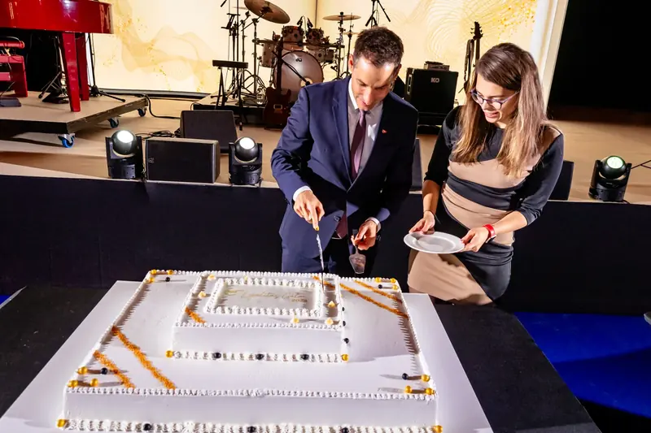
Kész, használható képek
Profi felszereléssel és utómunkával dolgozunk. A fotók élesek, jól megvilágítottak, nyomtatott anyagba és online felületre is jók.
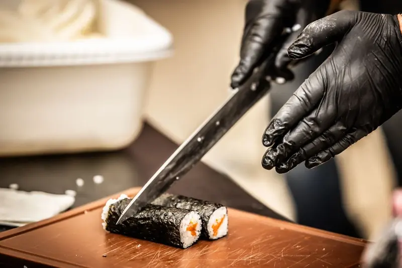
A képek elmesélik az estét
Nemcsak dokumentálunk. A fotók visszaadják a rendezvény hangulatát, az örömöt és az izgalmat. Aki megnézi őket, szinte újra átéli.
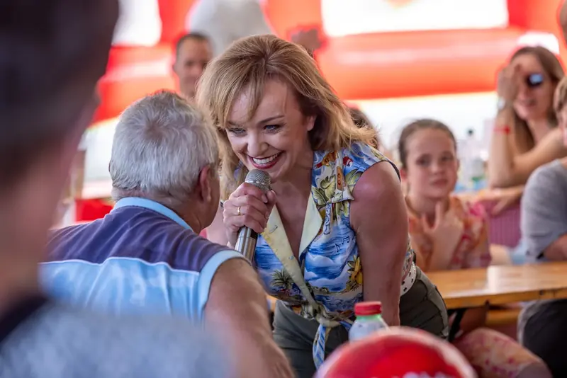
Te a vendégeidre figyelhetsz
A fotózás a mi dolgunk. Nem kell aggódnod, hogy lemaradsz egy fontos pillanatról, te és a vendégeid felszabadultan élvezhetitek az estét.
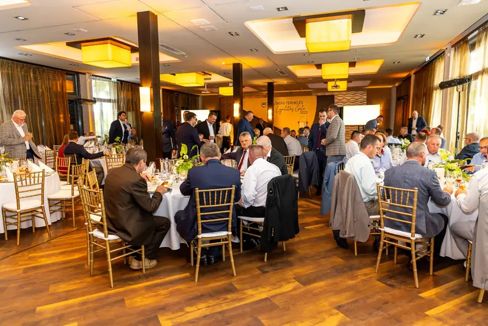
Méret nem akadály
Meghitt születésnaptól a több száz fős konferenciáig. Összehangoltan dolgozó fotósainkkal akár 1200 fős rendezvényt is vállalunk.
Céges rendezvényTöbbnapos rendezvénysorozatKonferenciaWorkshopCsaládi esemény
Galéria
13 fotó látható
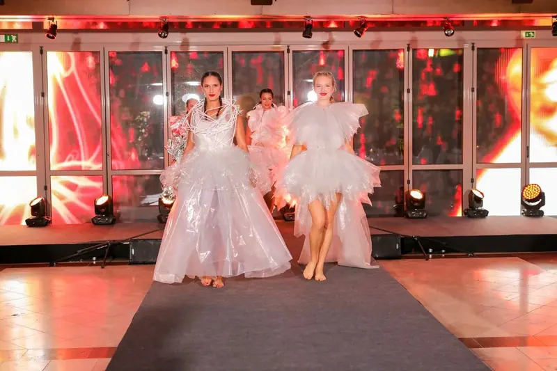
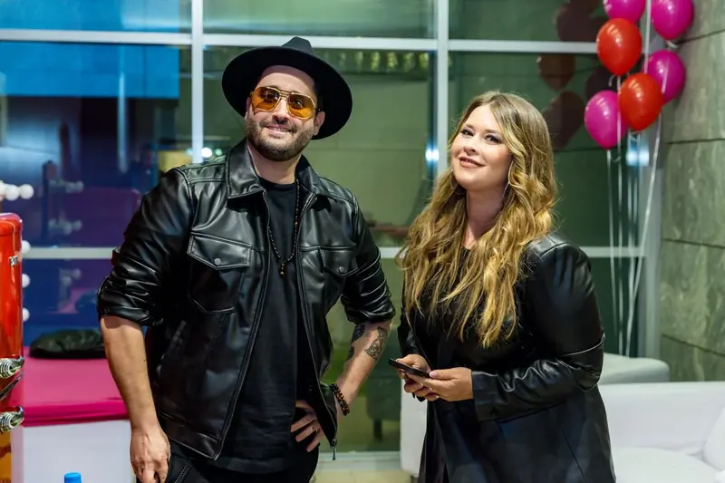
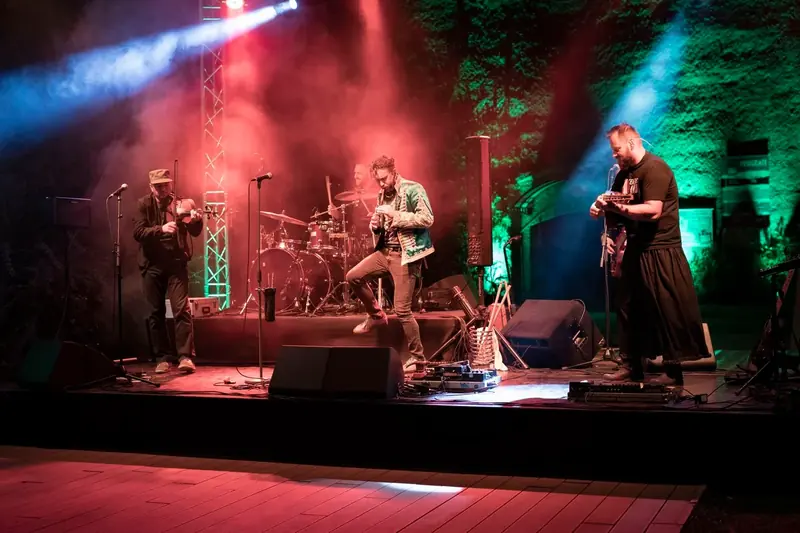
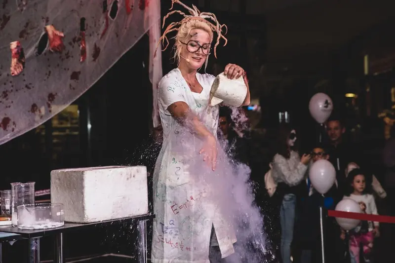
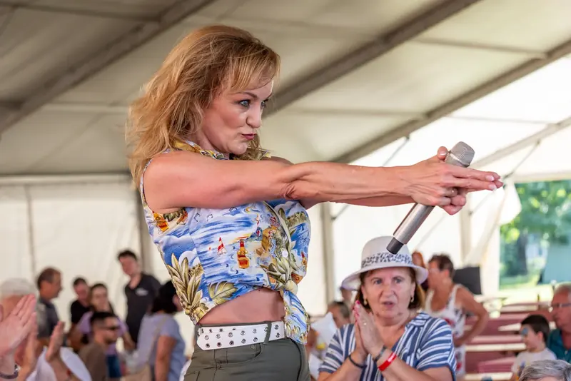
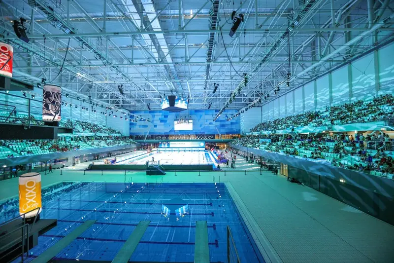
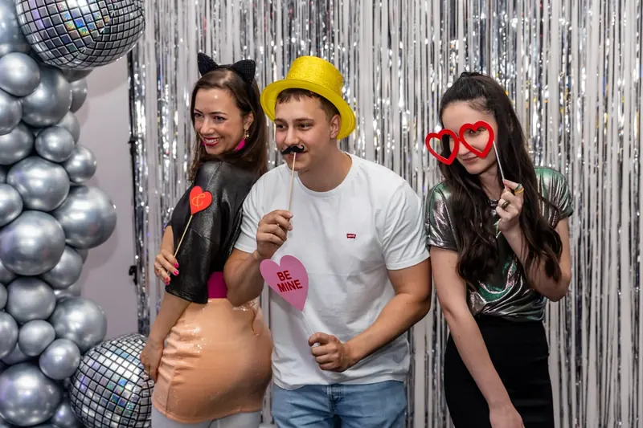
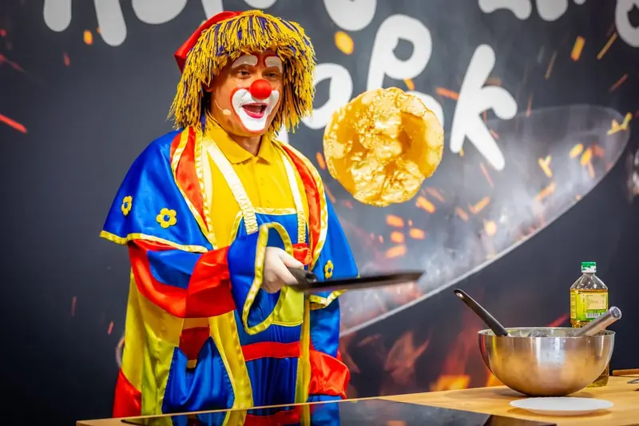
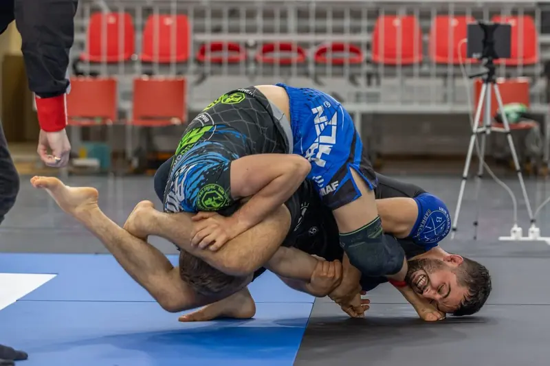
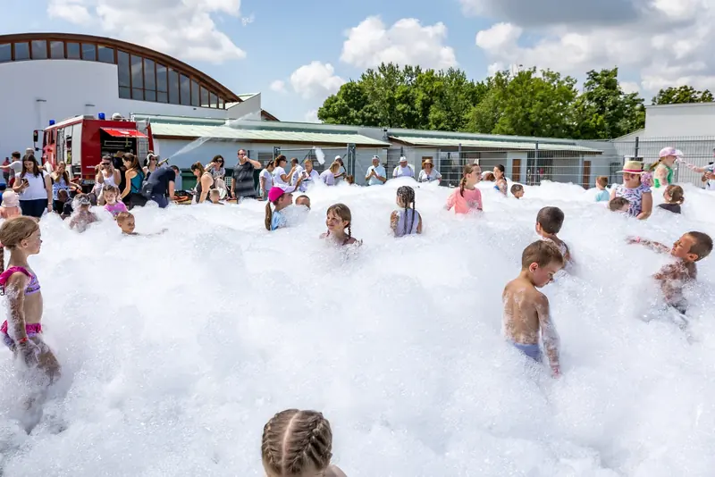
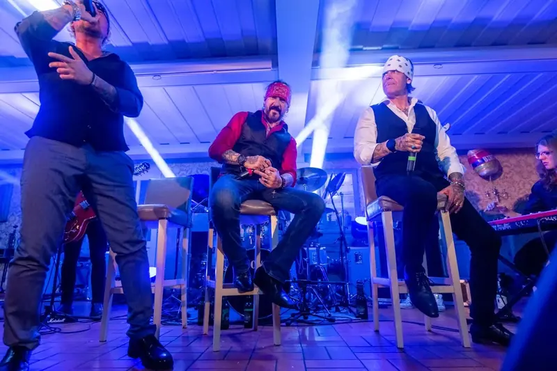
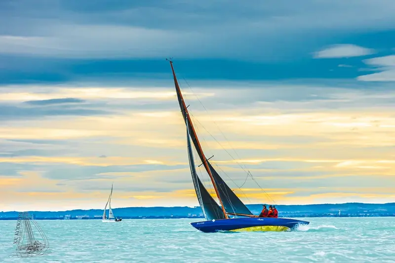
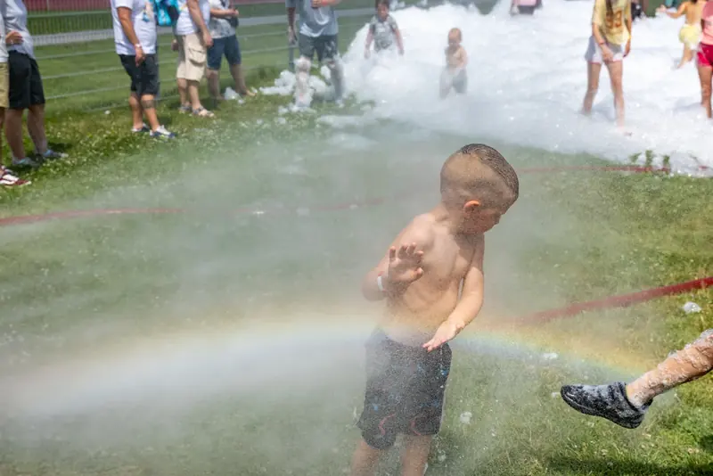
A képek nem tűnnek el a múlt homályában
A fotóalbumodban és a digitális galériádban élnek tovább. Írd meg, milyen eseményt tervezel, és ajánlatot küldünk.